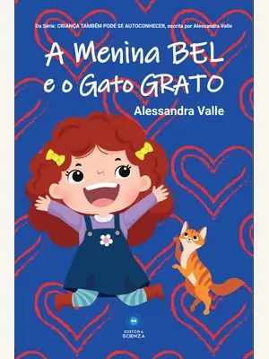
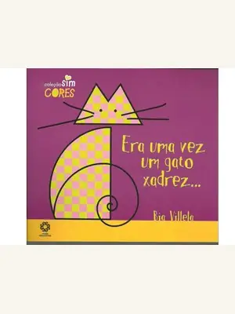
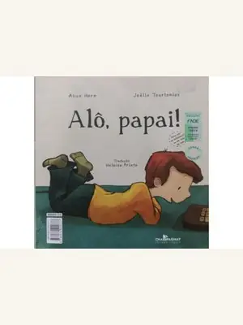
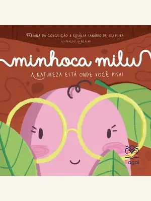
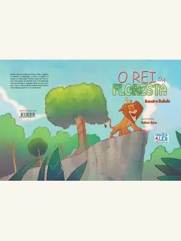
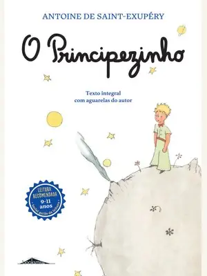
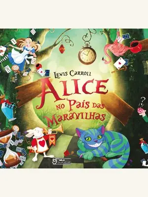
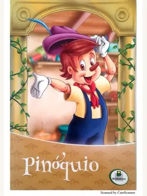
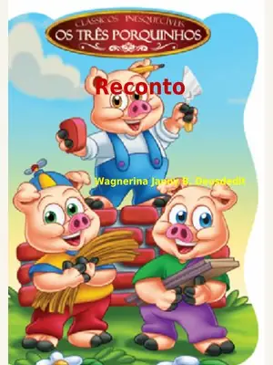
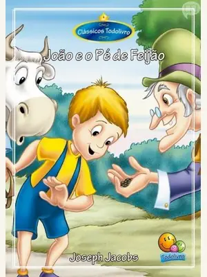

Sara GingaManual para pais e educadores
Pais de crianças de 2 a 6 anos
Assista ao vídeo até o fim. A Sara Ginga explica por que isso acontece — e o que você pode começar a fazer hoje, em 15 minutos por dia.
Ligue o som do celular
O botão aparece quando o vídeo mostrar o que fazer.
Manual completo em PDFR$ 37
QUERO O MANUAL 61 páginas · acesso na horaPix ou cartão em até 12x · garantia de 7 dias
Depoimentos reais de mães angolanas, publicados com autorização.
Eu pensava que educar era só chamar atenção quando a criança fazia alguma coisa errada. Com os exercícios, comecei a perceber a importância de brincar, conversar e ensinar com paciência. A minha filha começou a partilhar mais, a esperar pela sua vez e a ouvir melhor as orientações. Ainda estamos a aprender, mas já noto mudanças positivas.
O meu filho tinha dificuldade em aceitar um não e, quando brincava com outras crianças, às vezes não respeitava os limites delas. Começámos a fazer os exercícios juntos, principalmente os de respeito, empatia e controlo das emoções. Hoje, ele já consegue conversar melhor sobre aquilo que sente e está a aprender a respeitar os outros. Foi uma experiência muito boa para nós.
Antes, o meu filho tinha muita dificuldade em ouvir quando eu lhe chamava a atenção. Às vezes, qualquer coisa acabava numa discussão. Comecei a aplicar os exercícios com ele, um bocadinho todos os dias. Aos poucos, fui percebendo que estava mais disposto a conversar, a ouvir e a respeitar algumas regras em casa. Gostei muito porque também aprendi a lidar melhor com ele.
Manual completo em PDFR$ 37
QUERO O MANUAL 61 páginas · acesso na horaPix ou cartão em até 12x · garantia de 7 dias
Trabalho todos os dias com crianças em idade pré-escolar e com as mães que me escrevem. Este manual reúne as brincadeiras que funcionam, escritas de um jeito que qualquer pai ou mãe consegue fazer em casa.
Ver minha página no FacebookAs brincadeiras funcionam melhor quando há leitura em casa. Estes são os livros que costumo indicar — procure na livraria ou na biblioteca da escola.

A Menina Bel e o Gato GratoAlessandra Valle
Era uma vez um gato xadrezBia Villela
Alô, Papai!Alice Horn
Minhoca Milulivro ilustrado
O Rei da Florestalivro ilustrado
O Pequeno PríncipeSaint-Exupéry
Alice no País das MaravilhasLewis Carroll
PinóquioCarlo Collodi
Os Três Porquinhosconto tradicional
João e o Pé de Feijãoconto tradicionalSim. É para crianças de 2 a 6 anos. Com os menores, comece pelos capítulos 1 e 2.
Digital, em PDF. Logo depois do pagamento você vai direto para a página de download. Dá para ler no celular ou imprimir em casa — está em tamanho A4.
Pix, aprovado na hora, ou cartão de crédito em até 12x. O pagamento é feito pela Kiwify, plataforma segura de produtos digitais.
Você tem 7 dias de garantia. Se não gostar, pede o reembolso pela própria Kiwify e recebe o dinheiro de volta.